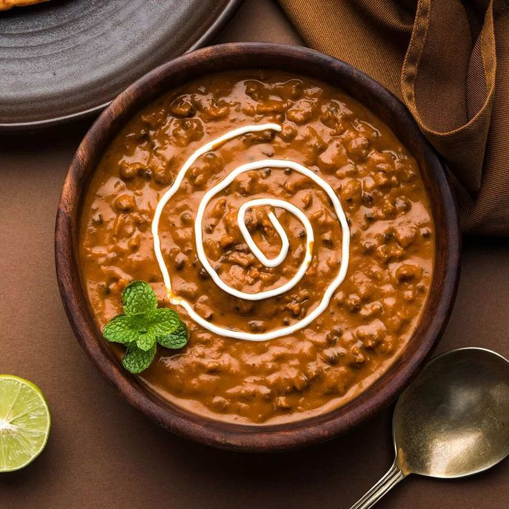

Ingredients:
For the Lentils:
1 cup whole black urad dal (black gram)
1/4 cup rajma (kidney beans)
4 cups water (for cooking dal and rajma)
1/2 tsp turmeric powder
1/2 tsp salt
For the Gravy:
2 tbsp ghee (clarified butter) or oil
1 tbsp butter
1 large onion, finely chopped
1 tbsp ginger-garlic paste
2-3 green chilies, slit
2 large tomatoes, pureed
1 tsp cumin seeds
1/2 tsp turmeric powder
1 tsp red chili powder
1 tsp garam masala
1 tsp coriander powder
1/2 cup fresh cream
Salt to taste
For Garnish:
2 tbsp fresh cream
1 tbsp chopped fresh coriander leaves
Instructions:
Preparation:
Rinse the urad dal and rajma under cold water until the water runs clear.
Soak them in enough water for at least 8 hours or overnight.
Cooking the Lentils:
Drain the soaked lentils and rajma.
In a pressure cooker, add the lentils, rajma, 4 cups of water, turmeric powder, and salt.
Pressure cook for about 15-20 minutes or until the lentils and rajma are soft and fully cooked. Alternatively, you can cook them in a pot, but it will take longer.
Preparing the Gravy:
Heat ghee (or oil) and butter in a large pan over medium heat.
Add cumin seeds and let them splutter.
Add the finely chopped onions and sauté until they turn golden brown.
Add ginger-garlic paste and slit green chilies, and sauté for another 2 minutes.
Pour in the tomato puree, and cook until the oil separates from the masala.
Add turmeric powder, red chili powder, garam masala, and coriander powder. Mix well.
Combining Lentils and Gravy:
Add the cooked lentils and rajma along with the cooking water into the pan. Mix well.
Simmer on low heat for about 30-45 minutes, stirring occasionally. Add more water if the mixture becomes too thick.
Final Touch:
Stir in the fresh cream and let it simmer for another 5-10 minutes. Adjust salt if needed.
Turn off the heat and let the dal rest for a few minutes before serving.
Garnishing:
Garnish with a drizzle of fresh cream and chopped coriander leaves before serving.
Tips:
For a richer taste, you can add more butter or ghee.
To get the authentic smoky flavor, you can use a technique called "dhungar" (smoke infusion) by placing a piece of hot charcoal in a small bowl, setting it on top of the dal, adding a few drops of ghee on the charcoal, and covering the pot with a lid to trap the smoke for a few minutes.
Enjoy your homemade Dal Makhani with naan, rice, or your favorite Indian bread!